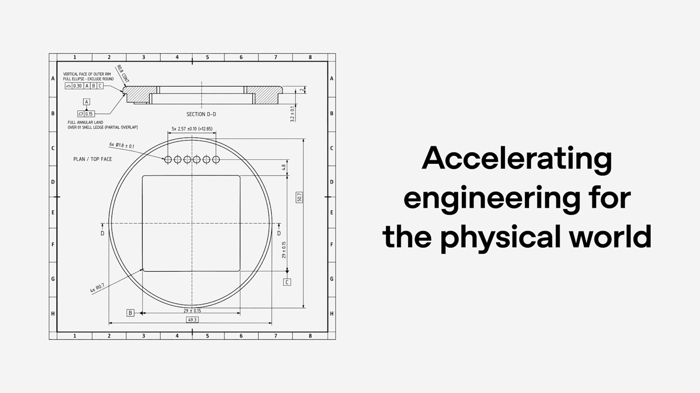
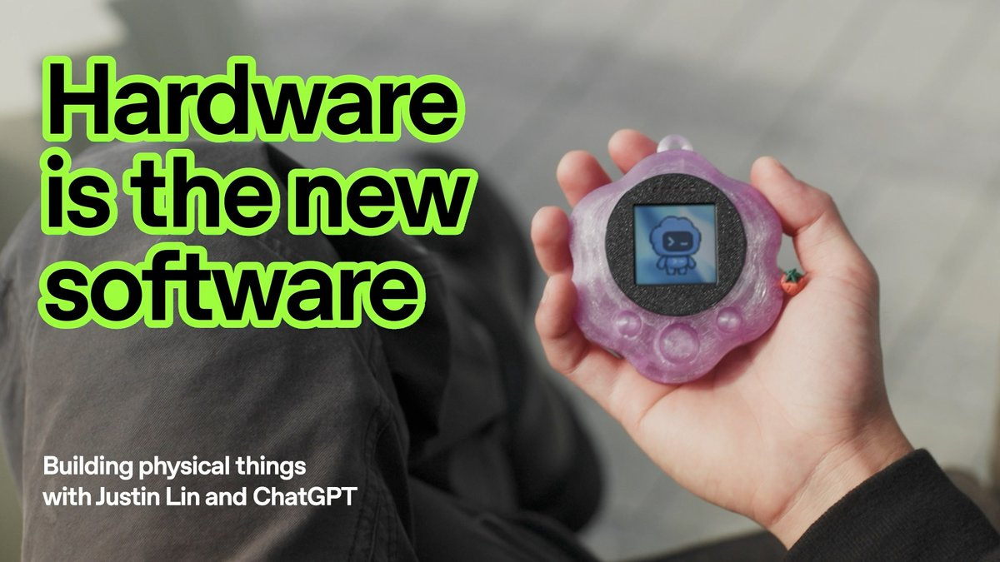
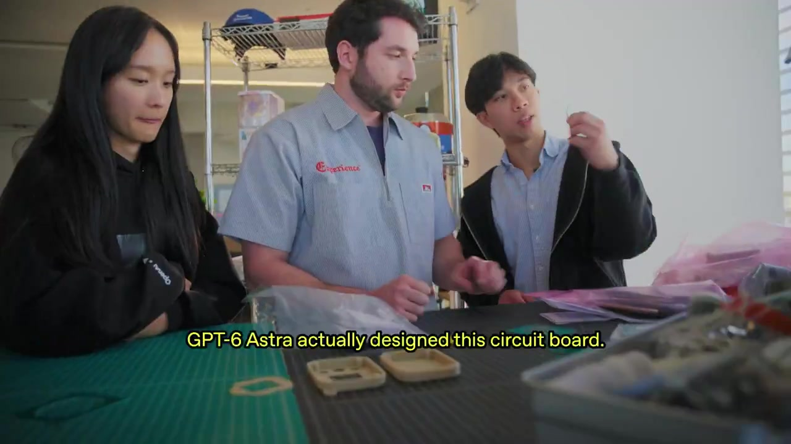
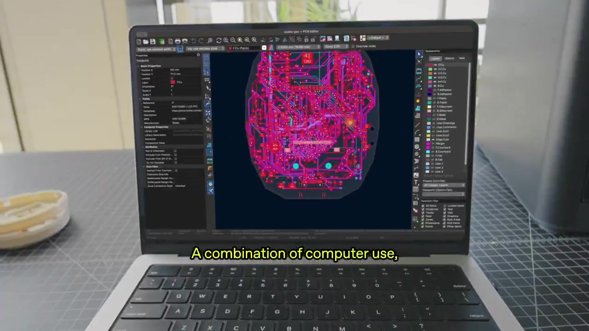
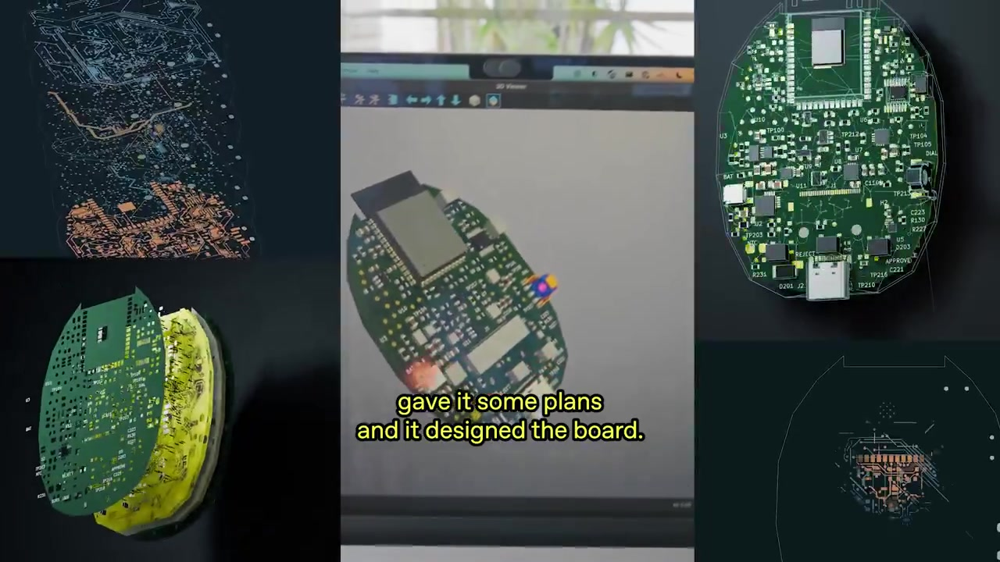
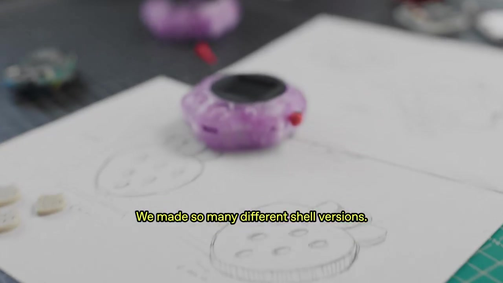
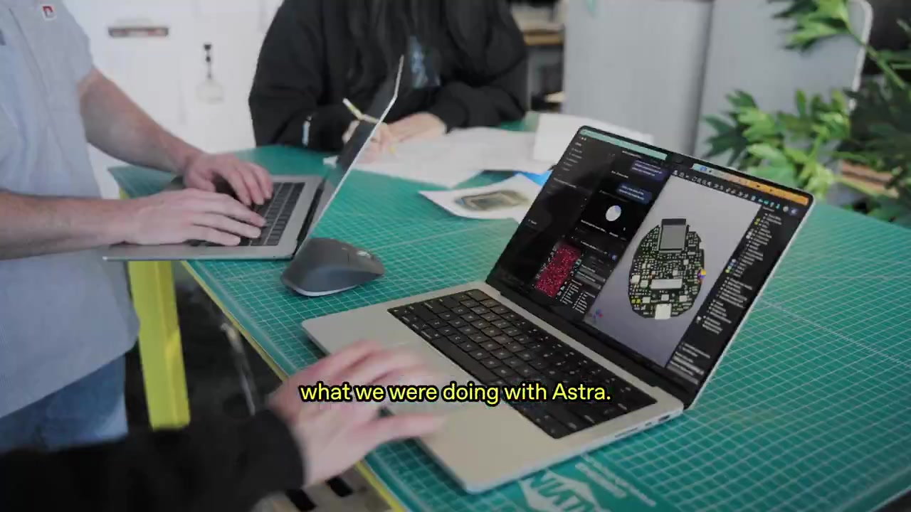

ChatGPT & Codex cho kỹ thuật thế giới vật lý — và cách thiết kế / tự làm mạch PCB kiểu Codex pet
Bản dịch / diễn giải tiếng Việt dựa trên bài đăng X https://x.com/OpenAI/status/2117692475775258785 và bài blog chính thức Accelerating engineering for the physical world (OpenAI, 3 tháng 11, 2026). Video đính kèm trên X được dùng qua phụ đề / báo cáo thứ cấp có trích dẫn lời Justin Lin — chúng tôi không mô tả nội dung video ngoài những gì đã xác minh bằng khung hình phụ đề hoặc nguồn văn bản. Bản quyền nội dung gốc thuộc về OpenAI. Bài dịch chỉ nhằm chia sẻ kỹ thuật; phần hướng dẫn tự làm mạch bên dưới là đề xuất của người dịch, không phải tài liệu chính thức của OpenAI.
TL;DR
- OpenAI công bố tiến bộ dùng ChatGPT và Codex cho kỹ thuật thế giới vật lý: thiết kế cơ khí (CAD), điện (ECAD/PCB), mô phỏng / FEA, bản vẽ sản xuất và review thiết kế.
- Thử nghiệm nổi bật: dùng GPT‑6 Astra thiết kế thiết bị “Codex pet” / TamaGPT (vỏ, PCB, firmware, UI) để nói chuyện với Codex — hai thành viên làm side project dưới một tuần; nhà thầu làm mẫu dưới một tháng; vẫn cần nhiều vòng review vì model chưa ổn định với dung sai / giới hạn nhà máy / lắp ráp.
- Đội hardware nội bộ OpenAI tăng dùng model 23× (tính theo token) từ tháng 2; BenchCAD 2.0: model nội bộ mới đạt trung bình 0.875 so với 0.594 của GPT‑6 Astra (reasoning cao nhất).
- Đối tác: Chip Ganassi Racing (scan 3D → CAD/bản vẽ 2D), Mazda (khí động / an toàn va chạm).
- Phần sau của bài: người dịch giải thích “physics board” chính là PCB của Codex pet, rồi hướng dẫn thiết kế và tự làm một mạch tương tự (khái niệm → kiến trúc → bước KiCad → ví dụ firmware) — rõ ràng đánh dấu là gợi ý, không phải leak thiết kế OpenAI.

Ảnh xã hội chính thức của bài OpenAI (tải về thư mục bài; không hotlink)
Ba chế độ đọc: dùng 3 nút tròn ở góc dưới bên phải để chuyển nhanh (trên điện thoại, ba nút nằm thành một thanh ở cuối màn hình để không đè chữ bên phải). VI — bản tiếng Việt đầy đủ, theo từng đoạn. EN — bản tiếng Anh, không tách cụm. Cụm (mặc định, biểu tượng A gạch dưới) — tiếng Anh tách thành các cụm theo mệnh đề; rê chuột hoặc chạm vào một cụm để xem nghĩa tiếng Việt. Chạm lần nữa hoặc chạm ra ngoài để đóng; với cụm chứa liên kết, trên điện thoại chạm lần đầu để xem nghĩa, chạm lần hai để mở liên kết. Chế độ được ghi nhớ trên máy này; có thể mở thẳng bằng ?mode=vi, ?mode=en hoặc ?mode=chunk.
Nội dung nguồn OpenAI (dịch / diễn giải)
OpenAI source summary
OpenAI source summary
Bài đăng X của OpenAI viết (dịch sát nghĩa):
OpenAI's X post reads:
OpenAI's X post reads:
ChatGPT và Codex đang giúp kỹ sư xây dựng cho thế giới vật lý.
Chúng tôi chia sẻ tiến độ trên thiết kế cơ khí, kỹ thuật điện và mô phỏng — từ việc giúp đội hardware nội bộ lặp nhanh hơn đến thử nghiệm quy trình mới với cộng tác viên trong ngành.ChatGPT and Codex are helping engineers build for the physical world.
We’re sharing progress across mechanical engineering, electrical engineering, and simulation—from helping our internal hardware team iterate faster to testing new workflows with industry collaborators.ChatGPT and Codex are helping engineers build for the physical world.
We’re sharing progress across mechanical engineering, electrical engineering, and simulation—from helping our internal hardware team iterate faster to testing new workflows with industry collaborators.
Video kèm theo mang khẩu hiệu “Hardware is the new software” và phụ đề giới thiệu Justin Lin làm việc với ChatGPT. Trên khung hình có thể thấy màn hình KiCad PCB Editor, vỏ nhựa trong suốt màu tím kiểu thú ảo (Codex pet), và các phiên bản vỏ / board đang lắp ráp trên bàn thí nghiệm.
The accompanying video carries the slogan “Hardware is the new software” and shows Justin Lin working with ChatGPT, alongside KiCad PCB Editor, a translucent purple Tamagotchi-style shell (“Codex pet”), and board/enclosure revisions on the lab bench.
The accompanying video carries the slogan “Hardware is the new software” and shows Justin Lin working with ChatGPT, alongside KiCad PCB Editor, a translucent purple Tamagotchi-style shell (“Codex pet”), and board/enclosure revisions on the lab bench.

Poster video trên X: thiết bị cầm tay dạng “pet” với nhân vật pixel trên màn hình
Bài blog Accelerating engineering for the physical world (3 tháng 11, 2026) mở rộng như sau.
The blog post Accelerating engineering for the physical world (Nov 3, 2026) expands as follows.
The blog post Accelerating engineering for the physical world (Nov 3, 2026) expands as follows.
Thiết kế một thiết bị với Astra
Designing a device with Astra
Designing a device with Astra
OpenAI thử khả năng đa phương thức và computer use của Astra bằng việc xem có tạo được thiết bị không chỉnh sửa trực tiếp bởi con người hay không. Họ dùng GPT‑6 để định nghĩa yêu cầu chức năng và thiết kế vỏ, printed circuit board (PCB), cùng tích hợp phần mềm cho một thiết bị người dùng có thể dùng để nói chuyện với Codex.
OpenAI tested Astra's multimodal and computer use capabilities by seeing whether it could design a device without direct human edits. They used GPT‑6 to define functional requirements and design the enclosure, printed circuit board (PCB), and software integration for a handheld device to talk to Codex.
OpenAI tested Astra's multimodal and computer use capabilities by seeing whether it could design a device without direct human edits. They used GPT‑6 to define functional requirements and design the enclosure, printed circuit board (PCB), and software integration for a handheld device to talk to Codex.
- Thẩm mỹ / thiết kế: Astra phát triển ngoại hình, lấy cảm hứng từ hợp tác gần đây với Work Louder và tham chiếu game / đồ chơi.Aesthetics / industrial design: Astra developed the look, drawing on a recent Work Louder collaboration and game/toy references.Aesthetics / industrial design: Astra developed the look, drawing on a recent Work Louder collaboration and game/toy references.
- Cơ khí: thiết kế vỏ và cấu trúc nội bộ giữ linh kiện.Mechanical: enclosure design and internal mounts holding components.Mechanical: enclosure design and internal mounts holding components.
- Điện: chọn linh kiện, layout PCB (đặt linh kiện + đấu nối) khớp với vỏ.Electrical: component selection and PCB layout (placement + routing) matching the shell.Electrical: component selection and PCB layout (placement + routing) matching the shell.
- UI/UX & phần mềm: giao diện, firmware và tích hợp kết nối thiết bị với Codex.UI/UX & software: interface, firmware, and Codex connectivity.UI/UX & software: interface, firmware, and Codex connectivity.
Hai thành viên hoàn thành thử nghiệm này dưới dạng side project trong dưới một tuần. Nhà thầu sản xuất làm một lô prototype nhỏ trong dưới một tháng.
Two team members completed this as a side project in under a week, and a contract manufacturer built a small prototype batch in under a month.
Two team members completed this as a side project in under a week, and a contract manufacturer built a small prototype batch in under a month.
OpenAI thừa nhận thẳng: đưa thiết bị sẵn sàng sản xuất vẫn cần nhiều vòng review và lặp. Astra chưa nhất quán tính đến giới hạn sản xuất của nhà máy, dung sai, hoặc chi tiết lắp ráp. Những khoảng trống này giúp họ biết model tương lai cần cải thiện gì.
OpenAI notes candidly that reaching production readiness still took multiple review iterations: Astra did not consistently account for fab limits, tolerances, or assembly details—highlighting clear targets for future models.
OpenAI notes candidly that reaching production readiness still took multiple review iterations: Astra did not consistently account for fab limits, tolerances, or assembly details—highlighting clear targets for future models.

Khung video: lab lắp ráp — phụ đề nhắc Astra đã thiết kế circuit board
Theo các báo cáo thứ cấp trích lời Justin Lin trong video (RD World, Orply): ông muốn một “Codex pet” trên màn hình nhỏ kèm nút push-to-talk, vì không muốn phải mở laptop để thì thầm với Codex; đây là lần đầu ông đi từ bare board tới PCB đã lắp — “rất đáng gờm” — nhưng ông bảo ChatGPT điều mình muốn, đưa vài plan, và model thiết kế board; sau đó vẫn cần vài vòng sửa với nhà máy. OpenAI gắn nhãn ảnh thí nghiệm là “TamaGPT device experiments”.
Secondary reports quoting Justin Lin in the video note he wanted a small-screen “Codex pet” with push-to-talk so he wouldn't have to open a laptop to talk to Codex; going from bare board to assembled PCB was “super daunting,” yet he gave ChatGPT plans and it designed the board (still needing factory revisions). OpenAI labels the experiment photos “TamaGPT device experiments.”
Secondary reports quoting Justin Lin in the video note he wanted a small-screen “Codex pet” with push-to-talk so he wouldn't have to open a laptop to talk to Codex; going from bare board to assembled PCB was “super daunting,” yet he gave ChatGPT plans and it designed the board (still needing factory revisions). OpenAI labels the experiment photos “TamaGPT device experiments.”
“Codex đã tăng tốc đáng kể cách chúng tôi đi từ ý tưởng tới linh kiện kỹ thuật. Chúng tôi lặp nhanh hơn trên CAD, chuyển thiết kế 3D thành bản vẽ 2D sẵn sàng sản xuất, và thiết lập mô phỏng cùng FEA với ít công thủ công hơn hẳn.” — Grace Lam, Forward Deployed Engineer, OpenAI
“Codex has dramatically accelerated how we move from an idea to an engineered part. We’re iterating faster across CAD, converting 3D designs into production-ready 2D drawings, and setting up simulations and FEA with far less manual work.” — Grace Lam, Forward Deployed Engineer, OpenAI
“Codex has dramatically accelerated how we move from an idea to an engineered part. We’re iterating faster across CAD, converting 3D designs into production-ready 2D drawings, and setting up simulations and FEA with far less manual work.” — Grace Lam, Forward Deployed Engineer, OpenAI
“…với tiềm năng phát triển thành đội ngũ chuyên gia phần cứng có thể đưa một bo mạch từ ý tưởng tới xuất Gerber.” — Qiong Wang, Member of Technical Staff, OpenAI
“…with the potential to grow into teams of hardware specialists that can take a board from concept to Gerber out.” — Qiong Wang, Member of Technical Staff, OpenAI
“…with the potential to grow into teams of hardware specialists that can take a board from concept to Gerber out.” — Qiong Wang, Member of Technical Staff, OpenAI
(Về AEC/BIM) Codex được dùng để tự động hóa tác vụ lặp, gắn cờ mâu thuẫn giữa bản vẽ / thông số kỹ thuật, và biến phát hiện phối hợp thành issue hành động được — Jackie Lee, Member of Infrastructure Staff, OpenAI.
(On AEC/BIM) Codex automates repetitive tasks, flags conflicts between drawings and specs, and turns coordination findings into actionable issues—Jackie Lee, Member of Infrastructure Staff, OpenAI.
(On AEC/BIM) Codex automates repetitive tasks, flags conflicts between drawings and specs, and turns coordination findings into actionable issues—Jackie Lee, Member of Infrastructure Staff, OpenAI.
Đo tiến độ & cộng tác ngành
Measuring progress & industry collaboration
Measuring progress & industry collaboration
Từ tháng 2, mức dùng model của đội hardware OpenAI (theo token) tăng 23 lần. Benchmark nội bộ BenchCAD 2.0 (tái tạo chi tiết / cụm 3D và nhận diện kết nối trên mạch) cho điểm trung bình 0.875 với một model nội bộ mới hơn, so với 0.594 của GPT‑6 Astra ở mức reasoning cao nhất.
Since February, token usage by OpenAI's internal hardware team grew 23×. On the internal BenchCAD 2.0 benchmark (3D part/assembly reconstruction and circuit connection recognition), a newer internal model averages 0.875 versus 0.594 for GPT‑6 Astra at max reasoning.
Since February, token usage by OpenAI's internal hardware team grew 23×. On the internal BenchCAD 2.0 benchmark (3D part/assembly reconstruction and circuit connection recognition), a newer internal model averages 0.875 versus 0.594 for GPT‑6 Astra at max reasoning.
OpenAI mở rộng hợp tác với Chip Ganassi Racing: biến scan 3D linh kiện hiện có thành CAD chỉnh được và bản vẽ sản xuất 2D (hữu ích khi thiếu file gốc). Họ cũng công bố hợp tác nghiên cứu mới với Mazda về khí động học và mô phỏng an toàn va chạm — Astra/Codex giúp khám phá biến thể mũi xe, mô phỏng dòng khí và tinh chỉnh phương án hứa hẹn (OpenAI ghi rõ thỏa thuận sử dụng với Mazda; cấm tái xuất bản hình ảnh liên quan ngoài ngữ cảnh đã cấp phép).
OpenAI expanded work with Chip Ganassi Racing (turning 3D scans into editable CAD and 2D production drawings) and announced a research collaboration with Mazda on aerodynamics and crash-safety simulation (noting Mazda image licensing limits).
OpenAI expanded work with Chip Ganassi Racing (turning 3D scans into editable CAD and 2D production drawings) and announced a research collaboration with Mazda on aerodynamics and crash-safety simulation (noting Mazda image licensing limits).
Công ty đang tìm kỹ sư, công ty kỹ thuật và nhà cung cấp phần mềm để định hình huấn luyện model frontier quanh công cụ và bài toán thực tế.
The company is seeking engineers, engineering firms, and software vendors to help shape frontier model training around real tools and workflows.
The company is seeking engineers, engineering firms, and software vendors to help shape frontier model training around real tools and workflows.

Khung video: KiCad PCB Editor — phụ đề nhắc “a combination of computer use”
“Physics board” trong ngữ cảnh bài này là gì?
What is “physics board” in this context?
What is “physics board” in this context?
Trong yêu cầu “chi tiết cách thiết kế và tự làm physics board”, đối tượng thực tế mà nguồn thể hiện là printed circuit board (PCB) — mạch in điện tử của thiết bị Codex pet / TamaGPT — chứ không phải bảng thí nghiệm vật lý hay simulation canvas trừu tượng.
Here, “physics board” refers concretely to the printed circuit board (PCB) of the Codex pet / TamaGPT handheld—not an abstract physics lab board or simulation canvas.
Here, “physics board” refers concretely to the printed circuit board (PCB) of the Codex pet / TamaGPT handheld—not an abstract physics lab board or simulation canvas.
Bằng chứng từ nguồn:
Evidence from the source:
Evidence from the source:
- Bài blog OpenAI nêu rõ Astra thiết kế PCB, đặt linh kiện và đấu nối khớp vỏ.The OpenAI post explicitly states Astra designed the PCB, placement, and routing to fit the enclosure.The OpenAI post explicitly states Astra designed the PCB, placement, and routing to fit the enclosure.
- Qiong Wang nói thẳng lộ trình “board from concept to Gerber out” (Gerber = định dạng xuất xưởng PCB).Qiong Wang cites taking a board “from concept to Gerber out” (the standard PCB fab output).Qiong Wang cites taking a board “from concept to Gerber out” (the standard PCB fab output).
- Video cho thấy layout trong KiCad, board hình trứng / hữu cơ với USB‑C, module được che chắn, nút (APPROVE / REJECT / DIAL trên một số khung), LED, test point; nhiều phiên bản vỏ (“We made so many different shell versions”).The video shows a KiCad layout of an egg-shaped board with USB‑C, shielded module, buttons (APPROVE / REJECT / DIAL), LEDs, and test points across many shell iterations.The video shows a KiCad layout of an egg-shaped board with USB‑C, shielded module, buttons (APPROVE / REJECT / DIAL), LEDs, and test points across many shell iterations.

Khung video: “gave it some plans and it designed the board” — CAD / layout PCB

Nhiều phiên bản vỏ (shell) song song với mạch
Ranh giới chính xác: OpenAI không công bố file KiCad / Gerber / BOM của Codex pet. Phần hướng dẫn dưới đây là gợi ý thực hành của người dịch để bạn tự thiết kế một board cùng lớp vấn đề (handheld + màn hình nhỏ + nút PTT + MCU Wi‑Fi nói chuyện với agent), không phải bản sao thiết kế nội bộ của họ.
Exact boundary: OpenAI has not released KiCad, Gerber, or BOM files for the Codex pet. The guide below is the translator's practical blueprint for a similar class of device (handheld + small screen + PTT button + Wi‑Fi MCU talking to an agent), not a copy of OpenAI's internal design.
Exact boundary: OpenAI has not released KiCad, Gerber, or BOM files for the Codex pet. The guide below is the translator's practical blueprint for a similar class of device (handheld + small screen + PTT button + Wi‑Fi MCU talking to an agent), not a copy of OpenAI's internal design.
Cách thiết kế mạch PCB kiểu Codex pet — gợi ý của người dịch
How to design a Codex-pet-style PCB (translator guide)
How to design a Codex-pet-style PCB (translator guide)
Gợi ý thực hành (không phải tài liệu OpenAI)
1. Khái niệm trước khi mở EDA
1. Concepts before opening EDA
1. Concepts before opening EDA
Một “Codex pet” thu nhỏ là hệ cơ điện tử (mechatronics) bốn lớp phải khớp nhau:
A pocket “Codex pet” is a four-layer mechatronics system where every piece must align:
A pocket “Codex pet” is a four-layer mechatronics system where every piece must align:
- Cơ khí (MCAD): vỏ, khoảng hở màn hình, nút, khe USB‑C, khoang pin, cấu trúc giữ board.Mechanical (MCAD): enclosure, screen cutout, buttons, USB‑C slot, battery bay, board mounts.Mechanical (MCAD): enclosure, screen cutout, buttons, USB‑C slot, battery bay, board mounts.
- Điện (ECAD): schematic + PCB layout + BOM + Gerber/drill/pick-and-place.Electrical (ECAD): schematic, PCB layout, BOM, and Gerber/drill/pick-and-place outputs.Electrical (ECAD): schematic, PCB layout, BOM, and Gerber/drill/pick-and-place outputs.
- Firmware: driver màn hình / nút / âm thanh (hoặc chỉ PTT), client nói chuyện với host / API Codex.Firmware: display/button/audio drivers and the client talking to the Codex host or API.Firmware: display/button/audio drivers and the client talking to the Codex host or API.
- DFM / DFT: dung sai nhà máy, test point, panelization, fiducial — đúng chỗ OpenAI nói Astra còn yếu.DFM / DFT: fab tolerances, test points, panelization, fiducials—the exact gaps OpenAI noted in Astra.DFM / DFT: fab tolerances, test points, panelization, fiducials—the exact gaps OpenAI noted in Astra.
Quy tắc vàng: khóa envelope cơ khí trước (kích thước board tối đa, chiều cao linh kiện, vị trí connector), rồi mới đi dây (route). Làm ngược lại là nguyên nhân phổ biến phải “chỉnh vài vòng với nhà máy”.
Golden rule: lock the mechanical envelope first (max board outline, component height, connector positions) before routing—doing it backward is the #1 cause of extra factory spins.
Golden rule: lock the mechanical envelope first (max board outline, component height, connector positions) before routing—doing it backward is the #1 cause of extra factory spins.
2. Kiến trúc tham chiếu (ví dụ mở, không phải BOM OpenAI)
2. Reference architecture (open example, not OpenAI's BOM)
2. Reference architecture (open example, not OpenAI's BOM)
┌─────────────────────────────────────────┐
│ Shell (3D print / resin) │
│ ┌───────────────────────────────────┐ │
│ │ Display (SPI/I2C OLED hoặc LCD) │ │
│ │ MCU Wi‑Fi (vd. ESP32‑S3) │ │
│ │ Nút PTT + 1–2 nút phụ │ │
│ │ Mic / loa (tuỳ chọn) │ │
│ │ USB‑C (sạc + serial) │ │
│ │ LiPo + charger + fuel gauge │ │
│ └───────────────────────────────────┘ │
└─────────────────────────────────────────┘
│ Wi‑Fi / BLE / USB
▼
Host hoặc API agent (Codex / ChatGPT)
Khối tối thiểu cho bản DIY học tập:
Minimum blocks for a learning DIY build:
Minimum blocks for a learning DIY build:
- MCU có Wi‑Fi (ESP32‑S3 hoặc tương đương) — dễ flash, cộng đồng lớn.Wi‑Fi MCU (ESP32‑S3 or equivalent)—easy to flash with strong community support.Wi‑Fi MCU (ESP32‑S3 or equivalent)—easy to flash with strong community support.
- Màn hình nhỏ SPI (ví dụ 1.3–1.54" ST7789) + FPC/connector cố định vị trí trên board.Small SPI display (e.g., 1.3–1.54" ST7789) with a firmly anchored FPC/connector.Small SPI display (e.g., 1.3–1.54" ST7789) with a firmly anchored FPC/connector.
- Một nút push-to-talk (debounce phần cứng RC hoặc firmware).Push-to-talk button (with RC hardware or firmware debounce).Push-to-talk button (with RC hardware or firmware debounce).
- USB‑C với điện trở CC đúng chuẩn (tránh chỉ hàn USB‑C “cho có”).USB‑C with proper CC resistors (never wire a bare USB‑C port without them).USB‑C with proper CC resistors (never wire a bare USB‑C port without them).
- Mạch sạc LiPo an toàn (IC chuyên dụng + bảo vệ cực).Safe LiPo charging circuit (dedicated charger IC + polarity/protection).Safe LiPo charging circuit (dedicated charger IC + polarity/protection).
3. Luồng thiết kế ECAD khuyến nghị
3. Recommended ECAD workflow
3. Recommended ECAD workflow
- Viết PRD một trang: use-case (“hỏi agent đang chạy bao nhiêu task”), nguồn điện, kích thước vỏ, giao diện người–máy, ràng buộc an toàn (pin).One-page PRD: use case, power budget, enclosure dimensions, HMI, and battery safety constraints.One-page PRD: use case, power budget, enclosure dimensions, HMI, and battery safety constraints.
- Block diagram → schematic trong KiCad: tách net nguồn (VBAT, 3V3, USB_VBUS), đánh dấu net cao tốc / anten nếu có module RF.Block diagram → schematic in KiCad: separate power nets (VBAT, 3V3, USB_VBUS) and flag high-speed/RF nets.Block diagram → schematic in KiCad: separate power nets (VBAT, 3V3, USB_VBUS) and flag high-speed/RF nets.
- Footprint & 3D model: mỗi linh kiện phải có footprint đã kiểm; xuất STEP để chồng lên vỏ MCAD.Footprints & 3D models: verify every footprint and export STEP to check fit inside the MCAD shell.Footprints & 3D models: verify every footprint and export STEP to check fit inside the MCAD shell.
- Placement: USB‑C và nút khớp cutout vỏ; anten xa pin kim loại / loa; tụ decoupling sát chân nguồn MCU.Placement: align USB‑C and buttons with cutouts, keep antennas clear of batteries/speakers, and place decoupling caps near MCU power pins.Placement: align USB‑C and buttons with cutouts, keep antennas clear of batteries/speakers, and place decoupling caps near MCU power pins.
- Routing: ưu tiên mặt đất liên tục; USB differential ~90 Ω; tránh cắt plane dưới crystal. Có thể nhờ agent điều phối workflow + Freerouting như thí nghiệm NextPCB từng mô tả (autorouter làm phần nặng; người / model vẫn chịu trách nhiệm DRC).Routing: keep a solid ground plane, 90 Ω differential USB pairs, and unbroken ground under crystals (agents can orchestrate Freerouting, while humans still own DRC).Routing: keep a solid ground plane, 90 Ω differential USB pairs, and unbroken ground under crystals (agents can orchestrate Freerouting, while humans still own DRC).
- ERC + DRC + bom-check: không còn chân hở (zero unconnected), clearance/mask theo năng lực nhà máy bạn chọn (thường 4/4 mil cho prototype rẻ; chặt hơn thì đắt hơn).ERC + DRC + BOM check: zero unconnected nets, clearances matching fab capabilities (e.g., 4/4 mil for budget prototypes).ERC + DRC + BOM check: zero unconnected nets, clearances matching fab capabilities (e.g., 4/4 mil for budget prototypes).
- Xuất xưởng: Gerber + drill + IPC‑356 + CPL (pick-and-place) + BOM có mã linh kiện MPN thật.Fab package: Gerber, drill, IPC‑356, CPL (pick-and-place), and BOM with real MPNs.Fab package: Gerber, drill, IPC‑356, CPL (pick-and-place), and BOM with real MPNs.
# Ví dụ checklist trước khi bấm “Order PCB”
# (chạy trong đầu hoặc script CI của bạn)
[ ] Board outline khớp DXF/STEP từ MCAD (±0.1 mm)
[ ] USB‑C mechanical keep-out vs shell
[ ] All nets named; no "Net-*" mồ côi trên nguồn
[ ] DRC: clearance, width, annular ring đạt spec fab
[ ] Test points trên UART, SWD/JTAG, VBAT, 3V3
[ ] Silkscreen: rev, QR nội bộ, cực pin rõ
[ ] BOM: mọi dòng có MPN + nhà phân phối dự phòng
Cách tự làm — từ file đến board trên tay
How to build it—from files to board in hand
How to build it—from files to board in hand
Gợi ý thực hành (không phải quy trình nhà máy của OpenAI)
- Chọn nhà fab / PCBA: JLCPCB, PCBWay, hoặc xưởng địa phương. Với lần đầu: đặt PCB + stencil + lắp SMT cơ bản; linh kiện khó (connector LCD) có thể hàn tay.Pick a fab/PCBA: JLCPCB, PCBWay, or a local shop—order PCB + stencil + basic SMT assembly and hand-solder tricky connectors if needed.Pick a fab/PCBA: JLCPCB, PCBWay, or a local shop—order PCB + stencil + basic SMT assembly and hand-solder tricky connectors if needed.
- Đặt số lượng nhỏ: 5–10 board là đủ để học “rev với nhà máy”. Đừng kỳ vọng rev A hoàn hảo — OpenAI cũng nói Astra cần nhiều vòng.Order small batches: 5–10 boards are enough to learn factory revisions; don't expect Rev A to be perfect.Order small batches: 5–10 boards are enough to learn factory revisions; don't expect Rev A to be perfect.
- Bring-up điện: đo ngắn mạch trước khi cấp nguồn → cấp qua hạn dòng → kiểm 3V3 → flash bootloader qua USB/UART.Electrical bring-up: check for shorts first, power up via current limit, verify 3V3, then flash the bootloader over USB/UART.Electrical bring-up: check for shorts first, power up via current limit, verify 3V3, then flash the bootloader over USB/UART.
- Smoke test ngoại vi: GPIO nút, khởi tạo SPI màn hình (màu solid), Wi‑Fi scan. Chỉ sau đó mới nối agent.Peripheral smoke test: verify button GPIO, SPI display init, and Wi‑Fi scan before connecting the agent.Peripheral smoke test: verify button GPIO, SPI display init, and Wi‑Fi scan before connecting the agent.
- Vỏ: in 3D (PETG/resin) nhiều biến thể như video nhấn mạnh — khớp dung sai lỗ nút và cửa sổ kính/màn hình trước khi đúc đẹp.Enclosure: 3D print (PETG/resin) multiple shell revisions to dial in button tolerances and screen windows before final molding.Enclosure: 3D print (PETG/resin) multiple shell revisions to dial in button tolerances and screen windows before final molding.
- An toàn: pin LiPo phải có bảo vệ; không sạc khi không có người trông trên bàn gỗ; tuân thủ quy định RF nếu phát sóng.Safety: use protected LiPo cells, never charge unattended on wood desks, and follow local RF rules.Safety: use protected LiPo cells, never charge unattended on wood desks, and follow local RF rules.

Computer-use trên công cụ ECAD — đúng hướng “model điều khiển phần mềm kỹ thuật”
Sơ đồ quyết định nhanh
Quick decision tree
Quick decision tree
Có cần RF + màn hình màu trong vỏ < 60 mm?
├─ Có → ESP32‑S3 + ST7789 + PCB 4 lớp (khuyến nghị)
└─ Không, chỉ học flow → module sẵn (devkit) + shield in 3D
(bỏ qua fab lần 1; vẫn luyện firmware + UX pet)
Muốn giống demo “agent tự layout”?
├─ Cho model PRD + constraint file + template KiCad
├─ Bắt buộc: người review DRC / DFM / an toàn pin
└─ Không bao giờ gửi Gerber chưa đọc diff so với rev trước
Ví dụ firmware tối giản (Minh họa — không phải firmware OpenAI)
Minimal firmware example (illustrative, not OpenAI's)
Minimal firmware example (illustrative, not OpenAI's)
Đoạn dưới chỉ minh họa vòng lặp “nhấn PTT → gửi câu hỏi → hiện trạng thái pet trên OLED”. Thay endpoint bằng API / bridge local của bạn. Đây không phải mã nguồn thiết bị TamaGPT.
This snippet illustrates a simple “press PTT → send query → show pet mood” loop—swap the URL for your local bridge/API (this is not TamaGPT's source).
This snippet illustrates a simple “press PTT → send query → show pet mood” loop—swap the URL for your local bridge/API (this is not TamaGPT's source).
// ESP32 / Arduino-style sketch (illustrative)
#include <WiFi.h>
#include <HTTPClient.h>
#include <Adafruit_GFX.h>
#include <Adafruit_ST7789.h>
#define PIN_PTT 0
#define TFT_CS 5
#define TFT_DC 16
#define TFT_RST 17
Adafruit_ST7789 tft = Adafruit_ST7789(TFT_CS, TFT_DC, TFT_RST);
const char* WIFI_SSID = "YOUR_SSID";
const char* WIFI_PASS = "YOUR_PASS";
const char* AGENT_URL = "http://192.168.1.10:8787/ask"; // bridge local
void drawPet(const char* mood) {
tft.fillScreen(ST77XX_BLACK);
tft.setTextColor(ST77XX_CYAN);
tft.setTextSize(2);
tft.setCursor(20, 40);
tft.println("CodexPet");
tft.setCursor(20, 80);
tft.println(mood);
}
String askAgent(const String& q) {
HTTPClient http;
http.begin(AGENT_URL);
http.addHeader("Content-Type", "application/json");
String body = String("{\"q\":\"") + q + "\"}";
int code = http.POST(body);
String resp = (code > 0) ? http.getString() : "err";
http.end();
return resp;
}
void setup() {
pinMode(PIN_PTT, INPUT_PULLUP);
tft.init(240, 240);
tft.setRotation(2);
drawPet("boot");
WiFi.begin(WIFI_SSID, WIFI_PASS);
while (WiFi.status() != WL_CONNECTED) delay(200);
drawPet("ready");
}
void loop() {
static bool armed = false;
if (digitalRead(PIN_PTT) == LOW && !armed) {
armed = true;
drawPet("listening");
// Thực tế: ghi âm / streaming; ở đây giả lập câu hỏi cố định
String ans = askAgent("how many agents are running?");
drawPet(ans.c_str());
}
if (digitalRead(PIN_PTT) == HIGH) armed = false;
}
Bridge phía host có thể chỉ là vài chục dòng Python gọi CLI Codex / API ChatGPT rồi trả JSON — đúng tinh thần “thiết bị là UI vật lý, não vẫn nằm ở agent”.
The host bridge can be a few dozen lines of Python calling the Codex CLI or ChatGPT API and returning JSON—keeping the device as a physical UI while the agent remains the brain.
The host bridge can be a few dozen lines of Python calling the Codex CLI or ChatGPT API and returning JSON—keeping the device as a physical UI while the agent remains the brain.
Know-how & Insight
Ghi chú của người dịch — không phải lời của OpenAI / Justin Lin
- Hardware đang trở thành bề mặt mới của agent coding. Codex vốn gắn với repo phần mềm; bài này đẩy cùng agent vào CAD/ECAD/FEA. Với team VN làm IoT/fintech-device, lợi thế gần nhất là: để model soạn bản vẽ 2D, checklist DFM và test plan — vẫn giữ kỹ sư ký duyệt dung sai.
- “Không human edit” ≠ “không human review”. OpenAI tự tách hai việc: model sinh thiết kế end-to-end, nhưng manufacturing readiness cần vòng lặp với nhà máy. Đừng bán nội bộ câu chuyện “AI làm board một phát là lên kệ”.
- Computer use + tool chuyên dụng thắng GUI thuần. Bài học từ phía NextPCB (Freerouting + KiCad): model giỏi điều phối workflow hơn là tự kéo từng đoạn trace. Hãy đưa agent vào CLI/plugin thay vì bắt nó “nhìn màn hình” để vẽ đồng.
- Đo bằng benchmark kỹ thuật, không chỉ bằng token. 23× token là tín hiệu adoption nội bộ, không phải 23× năng suất. BenchCAD 0.875 vs 0.594 mới là tín hiệu năng lực thiết kế.
- Co-design vỏ–board là nửa trận đấu. Video nhấn nhiều shell version song song board. Nếu bạn chỉ optimize PCB mà quên cutout USB / hành trình nút, bạn sẽ lặp đúng pain “assembly details” mà Astra chưa nắm vững.
- An toàn và giấy phép. Tự làm board học tập thì được; đưa ra thị trường cần EMC/RF, pin UN38.3, và tôn trọng bản quyền thiết kế / hình ảnh OpenAI–Mazda. Không sao chép silkscreen hay industrial design của TamaGPT.
Lưu ý nguồn: một số khung hình phụ đề video có thể khó đọc chính xác từng chữ; các trích dẫn lời Justin Lin ở trên dựa trên bài tường thuật thứ cấp (RD World, Orply) khớp nội dung blog OpenAI. Model trong blog chính thức là GPT‑6 Astra. OpenAI chưa mở KiCad project công khai của thiết bị này tại thời điểm viết bài dịch. Cập nhật ba chế độ đọc.
Mindmap
mindmap
root((Thế giới vật lý))
Nguồn OpenAI
ChatGPT và Codex
GPT-6 Astra
BenchCAD 2.0
CGR và Mazda
Codex pet
Vỏ và thẩm mỹ
PCB KiCad
Firmware UI
Push-to-talk
Thiết kế board
PRD và block
Schematic
Placement
Routing DRC
Tự làm
Gerber BOM
PCBA nhỏ
Bring-up
Nhiều shell
Insight dịch giả
Review nhà máy
Tool chuyên dụng
Co-design vỏ